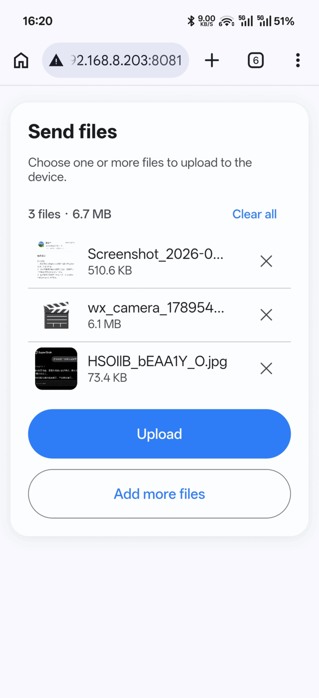
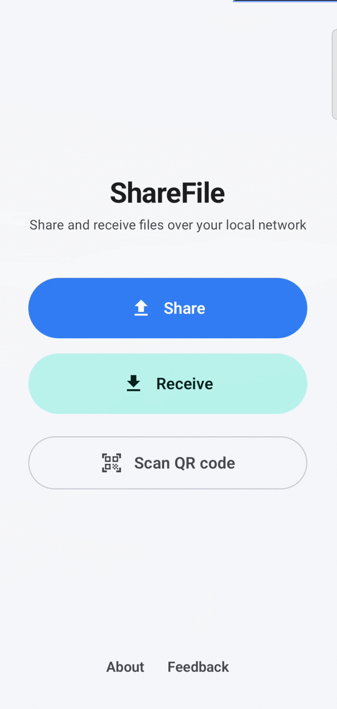
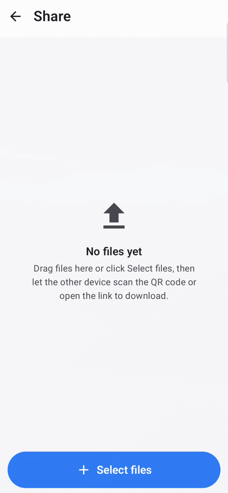
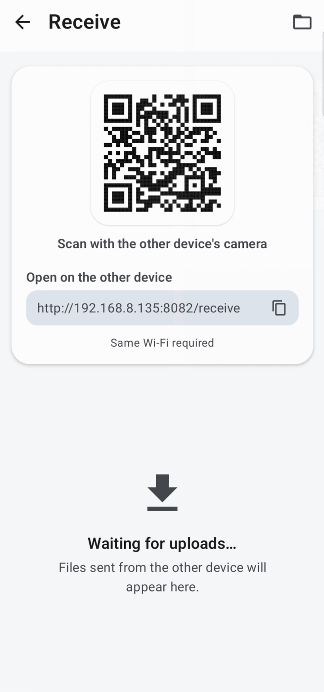
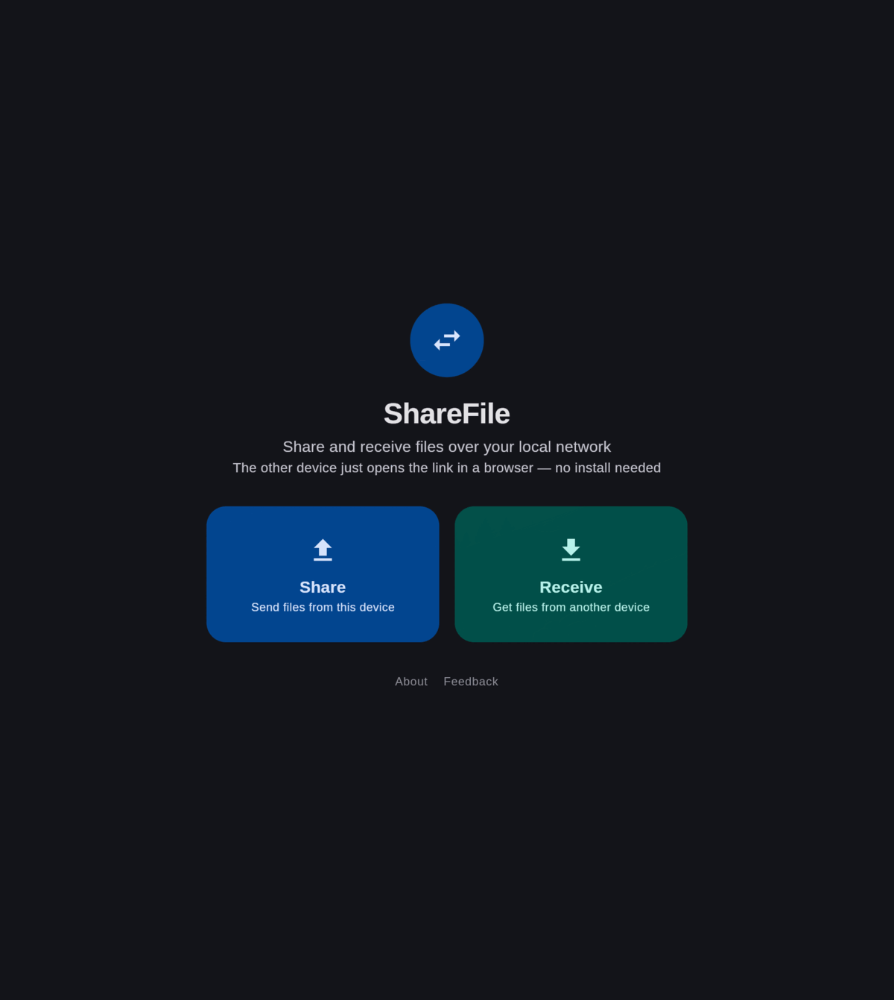

Share files over your local network — no app needed on the other device
Quick File Share is a free, open-source file transfer app for Android and Desktop. Send or receive files over Wi-Fi/LAN with a link or QR code. No cloud, no account, no internet connection.
MIT licensed · Android 8.0+ · Linux, Windows & macOS
Why Quick File Share
A simple LAN file transfer tool in the spirit of LocalSend and AirDrop, focused on just two things: sharing and receiving.
Share files
Pick files, start the built-in server, show a QR code or URL. The other device opens it in a browser and downloads.
Receive files
Show a QR code or URL and let the other device upload files straight to yours from a browser.
Scan a QR code
Scan another device's QR code to browse and download its shared files inside the app. Android only.
Cross-platform
One app for Android, Linux, Windows and macOS, using the same local network protocol.
No install on the other side
Any device with a web browser can send or receive files. Nothing to set up.
Private by design
Files travel directly between devices on your LAN. Nothing is uploaded to a server.
How it works
The app embeds a lightweight HTTP server bound to your device's local network address.
Start Share or Receive
The app starts a local web server and shows a QR code plus a URL.
Open the link
The other device opens the URL in any browser — or scans the QR code.
Transfer
Download or upload files directly over your Wi-Fi/LAN. No cloud in between.
Screenshots
The same app on Android and Desktop, and the browser page the other device sees.




Frequently asked questions
Everything you need to know about local network file sharing with Quick File Share.
Do both devices need to install the app?
No. Only the device that starts Share or Receive runs Quick File Share. The other device just needs a web browser — it opens the link or scans the QR code, then downloads or uploads files.
Does it work offline?
Yes. Files are transferred directly over your local network. No internet connection and no cloud account are required.
Is it a LocalSend alternative?
Yes. Like LocalSend it is free, open source and cross-platform. The difference is scope: Quick File Share focuses on the share/receive flow and lets the receiving device use a plain browser instead of installing the app.
Is it safe?
Your files never leave your local network — they go straight from one device to the other. The embedded server only listens on your LAN address and is stopped when you close the Share/Receive screen.
Which platforms are supported?
Android 8.0+ (APK), Linux (deb, rpm, Arch, portable), Windows (msi) and macOS (dmg).
Download
All builds are free and open source. See the latest release for checksums and notes.